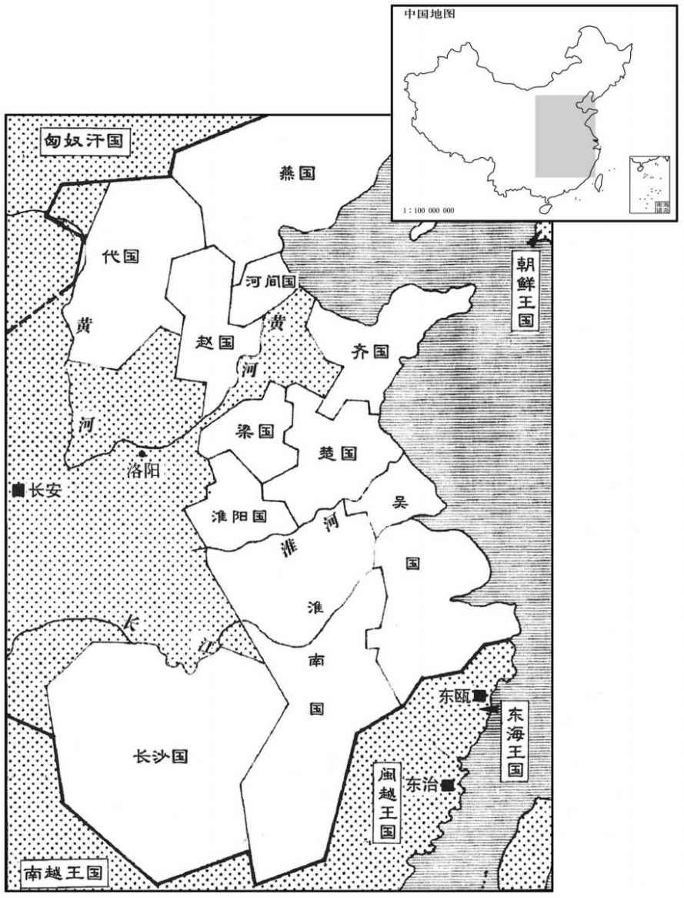
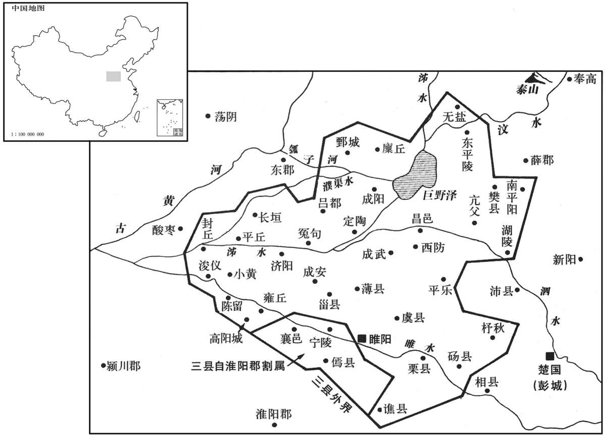

公元前169年资治通鉴：本年记事、原文与白话对照
按原书编年位置阅读；追叙和史论不等于本年发生的事件。白话采用所据译本，缺译不以生成译文补齐。
卷15 · 本年记事
公元前169年 · 汉太宗孝文皇帝前十一年
前十一年〔（壬申、前一六九）〕
本年事件索引（现代整理）

本年形势与背景参考图

本年形势与背景参考图
冬，十一月，上行幸代；春，正月，自代还。
冬季，十一月，文帝巡行代国；春季，正月，文帝自代国返回长安。
夏，六月，梁怀王揖薨，〔挕受封事见十三卷二年。〕无子。贾谊复上疏曰：〔复，扶又翻。〕“陛下即不定制，如今之势，不过一传、再传，〔服虔曰：一、二传世也。〕诸侯犹且人恣而不制，〔言人人自恣而不可制也。〕豪植而大强，〔言其矜豪自植立，太过于强也。〕汉法不得行矣。陛下所以为藩捍及皇太子之所恃者，唯淮阳、代二国耳。〔淮阳王武、代王参，帝之子而太子之弟也，故云所恃唯此二国。〕代，北边匈奴，与强敌为邻，能自完则足矣；而淮阳之比大诸侯，廑如黑子之着面，〔廑，与仅同。师古曰：黑子，今所谓黡子也。着，则略翻；下北着同。〕适足以饵大国〔言国小如鱼饵，适足为所吞食。〕而不足以有所禁御。方今制在陛下；制国而令子适足以为饵，岂可谓工哉！臣之愚计，愿举淮南地以益淮阳，而为梁王立后，〔为，于伪翻。〕割淮阳北边二、三列城与东郡以益梁。不可者，可徙代王而都睢阳。〔睢阳故宋国，微子所封；班志属梁国。括地志：宋州宋城县，在州南二里外，城中本汉之睢阳县也。汉文帝封子武于大梁，以其地卑湿，徙睢阳，故改曰梁。睢，音虽。〕梁起于新郪而北着之河，〔班志，新郪县属汝南郡。应劭曰：秦为郪丘；汉兴，为新郪。师古曰：颍川县。郪，千移翻。〕淮阳包陈而南揵之江，〔陈，即谓古陈国之地也。晋灼曰：包，取也。如淳曰：揵，谓立封界也；或曰：揵，接也。师古曰：揵，巨偃翻。〕则大诸侯之有异心者破胆而不敢谋。梁足以捍齐、赵，淮阳足以禁吴、楚，陛下高枕，终无山东之忧矣，〔枕，职任翻。〕此二世之利也。〔如淳曰：从谊言，可二世安耳。师古曰：言帝身及太子嗣位之时。〕当今恬然，适遇诸侯之皆少；〔师古曰：恬，安也。少，谓年少。少，时照翻。〕数岁之后，陛下且见之矣。夫秦日夜苦心劳力以除六国之祸；今陛下力制天下，颐指如意，〔如淳曰：但动颐指麾，则所欲皆如意。仲冯曰：颐、指，两事。〕高拱以成六国之祸，难以言智。苟身无事，畜乱，宿祸，〔畜，读曰蓄。〕孰视而不定；〔孰，古熟字通。〕万年之后，传之老母、弱子，将使不宁，不可谓仁。”帝于是从谊计，徙淮阳王武为梁王，北界泰山，西至高阳，得大县四十余城。后岁余，贾谊亦死，死时年三十三矣。
夏季，六月，梁怀王刘揖去世，他没有儿子。贾谊再次上疏说：“陛下如果不确立制度，从如今的趋势来看，封国不过传了一代或者两代，诸侯尚且自行其事不受朝廷节制，再扩张强大，朝廷的法度就没有办法实行了。陛下当做屏障和皇太子所能仗恃的，只有淮阳国、代国两个封国罢了。代国，北部与匈奴相接，与强敌为邻，能自我保全就足够了；淮阳国与那些强大的诸侯国相比，仅仅像一个黑痣附着在脸上一样，它恰恰只能诱发大国吞并的欲望，而无力对大国有所牵制。现在权在陛下手中；封立王国却使自已儿子的封国小得只能做被人吞并的诱饵，怎能说设计得好呢！我有个愚笨的计谋，请皇帝把原属淮南国的封地，全划归淮阳国，使淮阳国增大，并且为梁王立继承人，把淮阳北边的两三个城和东郡划归梁国，以扩大梁国的封地。如果不妥，可以把代王改封为梁王，而以睢阳为都城。梁国封地起于新而北面直达黄河，淮阳国的封地囊括了原来陈国的全境并且南部直达长江，那么其他大诸侯国有二心的，也胆战心惊不敢图谋反叛朝廷了。梁国足以阻止齐国和赵国，淮阳国足以禁制吴国和楚国，陛下可以垫高枕头安睡，再没有对崤山以东的忧虑了。这可使两代君主安享太平。现在安然无事，是因为恰巧诸侯王都还年幼，几年之后，陛下就会看见诸侯王带来的危机了。秦始皇日日夜夜苦心劳力以铲除六国之祸；而现在陛下牢牢地控制着天下，一举一动都能如意，却高拱两手安坐，造成新的六国之祸，就难说您有智谋。即便是终您一生太平无事，但却留下了祸乱的根源，对这些危机早就看到了却不去解决，待您百年之后，把危机留给了年迈的老母，幼稚的弱子，使 他们不得安宁，不能说您是仁者。”文帝于是采纳了贾谊的计策，把淮阳王刘武改封为梁王，梁国封地北以泰山为界，西至高阳，共有大县四十多个。又过了一年多，贾谊死去了，死时年仅三十三岁。
徙城阳王喜为淮南王。〔喜，城阳王章之子，齐悼惠王肥之孙。〕
文帝改封城阳王刘喜为淮南王。
匈奴寇狄道。〔狄道县为陇西郡治所。师古曰：其地有狄种，故曰狄道。〕
匈奴侵犯狄道。
时匈奴数为边患，〔数，所角翻。〕太子家令颍川鼌错上言兵事〔太子家令，属詹事。张晏曰：太子称家，故曰家令。臣瓒曰：茂陵中书：太子家令，秩八百石。颍川本韩国；秦置郡，汉因之。鼌，与朝同。风俗通：卫大夫史之后。姓谱：王子朝之后。错，仓故翻；音错杂之错者非。〕曰：“兵法曰：『有必胜之将，无必胜之民。』繇此观之，安边境，立功名，在于良将，不可不择也。〔将，即亮翻；下同。〕
当时，匈奴经常挑起边境战争，太子家令颍川人晁错向文帝上书，谈论战争问题说：“《兵法》说：‘有战无不胜的将军，没有战无不胜的民众。’由此看来，安定边境，建立功名，关键在于良将，不可不慎重地选择良将。
臣又闻：用兵临战合刃之急者三：一曰得地形，二曰卒服习，三曰器用利。兵法，步兵、车骑、弓弩、长戟、矛铤、剑楯之地，〔师古曰：铤，铁杷短矛也。孔颖达曰：方言云：矛，吴、扬、江淮南、楚、五湖之间谓之铊，或谓之铤，或谓之鏦；其柄谓之矜。铊，音蛇。晋陈安执丈八蛇矛，盖蛇即方言之所谓铊也。鋋，上延翻。楯，食尹翻。〕各有所宜；不得其宜者，或十不当一。士不选练，卒不服习，起居不精，动静不集，趋利弗及，避难不毕，〔趋，七喻翻。难，乃旦翻。〕前击后解，与金鼓之指相失，〔师古曰：金，金钲。鼓，所以进众，金，所以止众。“指”，当作“音”。〕此不习勒卒之过也，百不当十。兵不完利，与空手同；甲不坚密，与袒裼同；〔应劭曰：袒裼，肉袒。裼，音锡。〕弩不可以及远，与短兵同；射不能中，与无矢同；中不能入，与无镞同；〔中，竹仲翻。师古曰：镞，矢锋也。镞，子木翻。〕此将不省兵之祸也，〔师古曰：省，视也，悉井翻。〕五不当一。故兵法曰：『器械不利，以其卒予敌也；卒不可用，以其将予敌也；将不知兵，以其主予敌也；君不择将，以其国予敌也；〔予，读曰与。〕四者，兵之至要也。』
“臣又听说：在战场上与敌人交锋，有三件最重要的事情：一是占据有利地形，二是士兵训练有素，三是武器精良。按照《兵法》所说，步兵、车骑兵、弓弩、长戟、矛铤、剑盾等不同的兵种和武器，分别适用于不同的地形，各有所长；如果战场地形不利于发挥军队和武器的长处，就可能出现十个士兵不如一个士兵的情况。士兵不经过挑选，军队缺乏训练、起居管理混乱，动静不一致，胜利进攻时跟不上，退避危难时不能一致行动，前军已经刀兵相接，后军却仍松松垮垮，士兵不能随着鸣金击鼓进退，这是不训练军队的错误，这样的军队，一百个人不抵十个用。士兵手中的兵器不齐备不锋利，与徒手作战一样；将士身上的盔甲不坚固，与脱衣露体一样；弩箭射不到远处，与短兵器一样；射不中目标，与没有箭一样；箭虽然射中目标却射不进敌人身体，就与没有箭头一样。这是将领不检查武器导致的祸患，这样的军队，五个人不抵一个用。所以《兵法》说：‘器械不锋利，是把士卒奉送给敌人；士卒不听号令，是把统兵将领奉送给敌人；将领不懂兵法，是把他的君主奉送给敌人；君主不精心选择将领，是把国家奉送给敌人。’这四点，是用兵最重要的关键。
臣又闻：小大异形，强弱异势，险易异备。〔师古曰：易，平势也。易，以豉翻；下同。〕夫卑身以事强，小国之形也；合小以攻大，敌国之形也；〔师古曰：彼我之力不能相胜，则须连结外援共制之也。〕以蛮夷攻蛮夷，中国之形也。〔师古曰：不烦华夏之兵，使其同类自相攻击也。〕今匈奴地形、技艺与中国异：上下山阪，出入溪涧，中国之马弗与也；〔弗与，犹言不如也。技，渠绮翻；下同。〕险道倾仄，〔仄，古侧字。〕且驰且射，中国之骑弗与也；风雨罢劳，〔罢，读曰疲。〕饥渴不困，中国之人弗与也；此匈奴之长技也。若夫平原、易地，轻车、突骑，则匈奴之众易桡乱也；〔师古曰：突骑，言其骁锐可用冲突敌人也。桡，搅也，音火高翻；其字从“手”。一曰：桡，曲也，弱也，音女教翻；其字从“木”。〕劲弩、长戟，射疏、及远，〔师古曰：疏，亦阔远也。仲冯曰：“长戟”恐误。或者劲弩如今九牛大弩，以枪为矢欤，故可射疏及远也；然戟有钩，又不可射。余谓文意各有所属；劲弩，所以射疏，长戟，所以及远也。〕则匈奴之弓弗能格也；坚甲、利刃，长短相杂，游弩往来，什伍俱前，〔师古曰：五人为伍，十人为什。〕则匈奴之兵弗能当也；材官驺发，矢道同的，〔如淳曰：驺，矢也。处平易之地，可以矢相射也。臣瓒曰：材官，骑射之官也。射者驺发，其用矢者同中一的，言其工妙也。师古曰：驺，矢之善者；春秋传作“菆”，其音同耳。材官，有材力者。驺发，发驺矢以射也。手工，矢善，故中则同的。的，谓所射之准臬也。驺，侧鸠翻。〕则匈奴之革笥、木荐弗能支也；〔孟康曰：革笥，以皮作如铠者被之。木荐，以木板作如楯。一曰：革笥，木荐之，以当人心也。师古曰：一说非也。笥，音息嗣翻。〕下马地斗，剑戟相接，去就相薄，〔薄，伯各翻；师古曰：迫也。〕则匈奴之足弗能给也；〔师古曰：给，谓相连及。〕此中国之长技也。以此观之：匈奴之长技三，中国之长技五；陛下又兴数十万之众以诛数万之匈奴，众寡之计，以一击十之术也。
“臣又听说：在用兵时，依据交战双方国家大小不同、强弱不同和战场地形险峻平缓的不同，应采取不同的对策。自我贬抑，去侍奉大国，这是小国应采取的方法；如果与敌方不分强弱，就应联合其他小国对敌作战；利用蛮夷部族去进攻蛮夷部族，这是中原王朝应该采取的战略。现在匈奴的地形、军事技术与中原有很大不同：奔驰于山上山下，出入于山涧溪流，中原的马匹不如匈奴；在危险的道路上，一边策马奔驰一边射击，中原的骑射技术不如匈奴；不畏风雨疲劳，不怕饥渴，中原将士不如匈奴人；这是匈奴的优势。如果到了平原、地势平缓的地方，汉军使用轻车和骁勇的骑兵精锐，那么匈奴的军队就很容易被打乱；汉军使用强劲的弓弩和长戟，箭能射得很远，长戟也能远距离杀敌，那么匈奴的小弓就无法抵御；汉军身穿坚实的铠甲，手中有锋利的武器，长兵器与短兵器配合使用，弓箭手机动出击，兵按什伍编制统一进攻，匈奴的军队就不能抵挡；有勇力的弓箭手，以特制的好箭射向同一个目标，匈奴用皮革和木材制造的防御武器就会失效；下马在平地作战，剑戟交锋，近身搏斗，匈奴人的脚力就不如汉军；这是中原的军事优势。由此看来：匈奴有三项优势，汉军有五项优势；陛下又动用了数十万军队，去攻伐只有数万军队的匈奴，从兵员数量计算，这是以一击十的战术。士
虽然，兵，凶器，战，危事也；故以大为小，以强为弱，在俛仰之间耳。〔师古曰：言不知其术，则虽大必小，虽强必弱。俛，亦俯字。余谓俛，音免，亦通。〕夫以人之死争胜，跌而不振，〔服虔曰：蹉跌不可复起也。师古曰：跌，足失据也。跌，徒结翻。〕则悔之无及也；帝王之道，出于万全。今降胡、义渠、蛮夷之属来归谊者，其众数千，饮食、长技与匈奴同。〔【章：甲十五行本“同”下有“可”字；乙十一行本同；孔本同；张校同。】〕赐之坚甲、絮衣、劲弓、利矢，益以边郡之良骑，令明将能知其习俗、和辑其心者，〔师古曰：辑，与集同。〕以陛下之明约将之。即有险阻，以此当之；平地通道，则以轻车、材官制之；两军相为表里，各用其长技，衡加之以众，〔衡，与横同。〕此万全之术也。”
“尽管如此，刀兵是不祥之物，战争是凶险之事；由大变小，由强变弱，瞬息之间就会发生。用人的生死去决胜负，失利就难以重振国威，后悔都来不及了。英明的君主在决策时，应立足于万无一失。现在已归降朝廷的胡人、义渠、蛮夷等，部众达数千人，他们的饮食习俗、善于骑射的特长，都与匈奴一样。赐给他们坚固的铠甲、绵衣、强劲的弓，锋利的箭，再加上边境各郡的精崐锐骑兵，起用通晓兵法并了解蛮夷部族风俗习惯，能笼络其人心的将领，用陛下明确的约定统率他们。如果遇到险阻，就让这些人冲锋陷阵；在宽阔的平野，就用战车、步兵去制服敌人；两支军队互为表里，各自发挥他们的优势，再加上以众击寡，这是万无一失的战略。”
帝嘉之，赐错书，宠答焉。
文帝很赞赏他的意见，赐给晁错一封复信，以表示宠信。
错又上言曰：“臣闻秦起兵而攻胡、粤者，非以卫边地而救民死也，贪戾而欲广大也，故功未立而天下乱。且夫起兵而不知其势，战则为人禽，屯则卒积死。夫胡、貉之人，其性耐寒；扬、粤之人，其性耐暑。秦之戍卒不耐其水土，戍者死于边，输者偾于道。〔耐，乃代翻。服虔曰：偾，仆也，如淳曰：偾，音奋。〕秦民见行，如往弃市，因以谪发之，名曰『谪戍』；先发吏有谪及赘婿、贾人，后以尝有市籍者，又后以大父母、父母尝有市籍者，后入闾取其左。〔应劭曰：秦以谪发戍，先自吏有过至于大父母、父母尝有市籍者；曹辈尽，复入闾取其左者发之，未及取右而秦亡。孟康曰：秦时复除者居闾之左，后发役不供，复役之也。师古从应说。闾，里门也；居闾之左者，一切发之。〕发之不顺，行者愤怨，有万死之害而亡铢两之报，〔亡，古无字通。〕死事之后，不得一算之复，〔汉律：人出一算，算百二十钱。〕天下明知祸烈及己也；〔师古曰：猛火曰烈，取以喻耳。〕陈胜行戍，至于大泽，为天下先倡，〔事见七卷二世元年。〕天下从之如流水者，秦以威劫而行之之敝也。
晁错再一次上书说：“臣听说秦起兵攻打匈奴和百越，不是为了保卫边境安宁、防止人民死于战争，而是残暴贪婪，要想扩大它的疆域，所以，功业没有建立，天下已经大乱。而且如果用兵而不了解敌人的虚实强弱，进攻就会被敌人所俘虏，屯守就会被敌人所困死。北方的胡人和貉人，生性耐寒；南方扬、粤一带的人，生性耐暑。秦朝的戍卒不服南北两地的水土，戍守边疆的死在边境，输送给养的死于路上。秦朝百姓被征发当兵，就如同去刑场被处死，于是秦王朝就征发犯罪的人去戍边，称作‘谪戍’。先是征发犯罪的官吏以及赘婿和商人充军，后来又扩大到曾有市籍经过商的人，然后又扩大到祖父母、父母曾有市籍经过商的人，最后强迫居住于闾左按规定不负担兵役的人，也去当兵。胡乱征发，被强迫当兵的人都心怀愤恨，他们遭受必死无疑的厄运，朝廷 却不给以丝毫的报偿，死于战场，他们的家属得不到国家免收一算赋税的回报，天下人都清楚地知道秦的暴政祸及自己。陈胜前去戍边，来到达大泽乡，首先为天下人做出了反秦的表率。天下人响应陈胜，如同流水下泄势不可挡，这是秦以严威强制征兵的恶果。
胡人衣食之业，不着于地，〔着，直略翻。〕其势易以扰乱边境，〔易，以豉翻。〕往来转徙，时至时去；此胡人之生业，而中国之所以离南畮也。〔师古曰：南畮，所以耕种处也。离，力智翻。〕今胡人数转牧、行猎于塞下，〔数，所角翻。〕以候备塞之卒，卒少则入。陛下不救，则边民绝望而有降敌之心；救之，少发则不足，多发，远县才至，则胡又已去。〔师古曰：才，浅也，犹言仅至也；他皆类此。〕聚而不罢，为费甚大；罢之，则胡复入。〔复，扶又翻。〕如此连年，则中国贫苦而民不安矣。陛下幸忧边境，遣将吏发卒以治塞，甚大惠也。〔治，直之翻。〕然今〔【章：甲十五行本“今”作“令”；孔本同。】〕远方之卒守塞，一岁而更，〔岁更，见十三卷高后五年。更，工衡翻。〕不知胡人之能。不如选常居者家室田作，且以备之，以便为之高城深堑；〔因山川地形之便而为之城堑。〕要害之处，通川之道，调立城邑，毋下千家。〔师古曰：调，谓算度之也。摠计城邑之中，令有千家以上也。调，徒钓翻。〕先为室屋，具田器，乃募民，免罪，拜爵，〔谓有罪者免其罪，无罪者拜爵以劝其徙。〕复其家，〔谓民之欲往者，复除其家征役。复，方目翻。〕予冬夏衣、禀食，能自给而止。〔师古曰：初徙之时，县官且禀给其衣食，于后能自供赡乃止也。予，读曰与；下同。〕塞下之民，禄利不厚，不可使久居危难之地。〔难，乃旦翻。〕胡人入驱而能止其所驱者，以其半予之，〔孟康曰：谓胡入为寇，驱收中国，能夺得之者，以半予之。师古曰：孟说非也。言胡人入为寇，驱略汉人及畜产也。人能止得其所驱者，令其本主以半赏之。〕县官为赎。〔张晏曰：得汉人，官为赎也。师古曰：张说非也。此承上句之言，谓官为备价赎之耳。为，于伪翻；下同。〕其民如是，则邑里相救助，赴胡不避死。非以德上也，〔师古曰：言非以此事欲立德义于主上也。〕欲全亲戚而利其财也；此与东方之戍卒不习地势而心畏胡者功相万也。〔言其功万倍于东方之戍卒也。〕以陛下之时，徙民实边，使远方无屯戍之事；塞下之民，父子相保，无系虏之患；利施后世，名称圣明，其与秦之行怨民，相去远矣。”〔师古曰：行怨民，言发怨恨之民使行戍役也。〕
“匈奴人的衣食来源，不依靠土地，所以经常扰乱边境，往来转移，有时入侵，有时撤走；这是匈奴人的谋生之业，却使中原汉人离开了农田。现在匈奴人经常在边界一带放牧、打猎，察看汉军守边士兵的状况，发现汉军人少，就会入侵。如果陛下不发兵救援，边境百姓不能指望朝廷的救兵，就会萌发投降敌人的念头；如果陛下发兵救援，发兵太少就不起作用，多发援兵，来自于远方的各县援兵刚刚到达，匈奴军队又已撤走了。不撤走聚集在边境的大量军队，军费开支太大；撤走援兵，匈奴人又乘虚而入。这样连年折腾，那么中原地区就会陷入贫困，百姓无法安居乐业了。幸得陛下担忧边境问题，派遣将吏发兵加强边塞防务，这是对边境百姓的很大恩惠。但是现在远方的士兵驻防边塞，一年轮换一批，不了解匈奴人的本领。不如选常居的人在边境安家从事农耕生产，并且用于防御匈奴入侵，利用有利地势建成高城深沟；在战略要地、交通要道，规划建立城镇，规模不小于千户人口。官府先在城中修建房屋，准备农具，再召募百姓来边城居住，赦免罪名，赏给爵位，免除应募者全家的赋税劳役，并向他们提供冬夏季衣服和粮食，直到他们能生产自足时为止。如果崐不给边塞民众优厚的利禄，就无法使他们长期定居在这片危险困苦的土地上。匈奴入侵，有人能从匈奴手中夺回所掠财物，就把其中的一半给他，由官府为他赎买。边塞的百姓得到这样的待遇，就会邻里街坊相互救援帮助，冒死与匈奴搏斗。他们这样做，并不是对皇帝感恩戴德想有所报答，而是要想保全亲戚邻居，贪恋财产；与那些不了解本地地形并且对匈奴心怀畏惧的东方戍卒相比，他们防御匈奴的功效要高出一万倍。在陛下当政之时，迁徙百姓以充实边防，使远方没有屯戍边境的徭役；而边塞的居民，父子相互保护，免受被匈奴俘虏的苦难；陛下这样做，利益传到后世，得到圣明的名声，这与秦征发满怀怨恨的百姓去戍守边疆，是不能相比的。”
上从其言，募民徙塞下。
文帝采纳晁错的建议，招募百姓迁往边塞定居。
错复言：“陛下幸募民徙以实塞下，使屯戍之事益省，输将之费益寡，〔如淳曰：将，送也；或曰：资也。复，扶又翻。〕甚大惠也。下吏诚能称厚惠，〔称，尺证翻。〕奉明法，存恤所徙之老弱，善遇其壮士，和辑其心而勿侵刻，使先至者安乐而不思故乡，〔乐，音洛。〕则贫民相募〔【章：甲十五行本“募”作“慕”；乙十一行本同；孔本同。】〕而劝往矣。臣闻古之徙民者，相其阴阳之和，〔相，息亮翻。〕尝其水泉之味，然后营邑、立城，制里、割宅，先为筑室家，置器物焉，民至有所居，作有所用。此民所以轻去故乡而劝之新邑也。〔之，往也。〕为置医、巫以救疾病，以修祭祀，男女有昏，〔师古曰：昏，谓婚姻配合也。〕生死相恤，坟墓相从，种树畜长，〔师古曰：种树，谓桑、果之属。张晏曰：畜长，六畜也。贡父曰：所种、畜积、长茂。余谓畜长当从张说。畜，许六翻。长，知两翻。〕室屋完安。此所以使民乐其处而有长居之心也。〔乐，音洛。〕
晁错再次上书说：“陛下召募迁徙的百姓以充实边塞，使屯戍的徭役越发减省，运输费用更加减少，这是对百姓很大的恩惠。下级官吏的表现如果真能与陛下对百姓的厚惠相称，遵奉陛下的法令，对迁来的应募百姓，照顾其中的老弱，厚待其中的壮士，争取他们的拥护而不去欺凌他们，使先来的人安居乐业而不思念自己的故乡，那么贫民就会感到羡慕，相互劝勉前往边塞了。臣听说古代明君迁徙百姓，要先察看当地是否阴阳调和，品尝水泉是否甘美可口，然后再营造集镇、修筑城池，设计乡里、划分住宅地，先为百姓修筑房屋，配置器物，百姓到达后有可居住的房屋，有可使用的器物。这正是百姓不留恋故乡而相互勉励迁往新居的原因。官府在迁徙的新居住区设置医生、巫神，为百姓医治疾病，主持祭祀。百姓得以男女婚配，生老病死相互照顾，坟墓相互依靠，栽种树木，喂养六畜，屋房完备安全。这样做正是为了让百姓乐于长期定居此地。
臣又闻古之制边县以备敌也，使五家为伍，伍有长，〔长，知两翻。〕十长一里，里有假士，四里一连，连有假五百，十连一邑，邑有假候，〔服虔曰：假，音假借之假。五百，帅名也。师古曰：假，大也，工雅翻。仲冯曰：假，服说是。古者戍皆有期，代则不置。古曰假，谓其权设；犹假司马之类，亦非常置也。余谓五百，即后所谓伍伯也。贾公彦曰：伍伯者，汉制，五人为伍；伯，长也。沈约曰：旧说，古者君行师从，卿行旅从；旅者，五百人也，今诸官府至郡各置五百四，以象师从、旅从，依古义也。候，即军候也。〕皆择其邑之贤材有护、〔师古曰：有保护之能者也。〕习地形、知民心者；居则习民于射法，出则教民于应敌。故卒伍成于内，则军政定于外。服习以成，勿令迁徙，〔师古曰：各守其业也。〕幼则同游，长则共事。〔长，知两翻。〕夜战声相知，则足以相救；昼战目相见，则足以相识；驩爱之心，足以相死。如此而劝以厚赏，威以重罚，则前死不还踵矣。〔师古曰：还踵，回旋其足也。还，音旋。〕所徙之民非壮有材者，但费衣粮，不可用也；虽有材力，不得良吏，犹亡功也。〔亡，古无字通。〕
“臣又听说古代明君为了防御敌人入侵，在沿边境的各县创设如下建制：每五家为一伍，设置伍长；每十个伍的民户为一里，里设置有假士；每四里为一连，连有假五百；每十连为一邑，邑设置假候，都选择邑中贤才里有保护能力、熟悉地形、了解民心的人担任这些职务；安居本地就教民众学习射箭，出临边境就教民众学习防御敌人。军事编制形成于内，军事政令就能在外有效地发挥作用。百姓训练有素，不许他们随便迁移，年幼时一同玩乐，成年后共事。夜间战斗，只要听到声音就能互相了解，足以相互救援；白天作战，只要看见，就足以相互识别；友爱之心，足以使他们生死与共。在此基础上，朝廷再以厚赏奖励，以重罚威逼，百姓就会前仆后继，勇往直前了。所迁徙的百姓如果不是强壮有力的人，只能虚耗衣服粮食，不能用于充实边防；百姓虽然强壮有力，但如果没有好官去治理，也不会有功效。
陛下绝匈奴不与和亲，臣窃意其冬来南也；〔师古曰：意，儗也。〕壹大治，则终身创矣。〔师古曰：创，惩艾也；初亮翻。〕欲立威者，始于折胶；〔苏林曰：秋气至，胶可折，弓弩可用；匈奴常以为候而出军。折，而设翻。〕来而不能困，使得气去，〔师古曰：使之得胜，逞志气而去。〕后未易服也。”〔易，以豉翻。〕
“陛下拒绝与匈奴和亲，我私下估计他们冬季会向南进犯；边境一旦大治，就可以重创匈奴，使他们终身不振恢复不了元气。如果想树立汉朝廷的威名，就应该在秋季匈奴刚纵兵入侵时就给以痛击；假若匈奴来犯而不能打败他们，使他们得志而去，以后就不容易降服了。”
错为人陗直刻深，〔师古曰：陗，与峭同。陗，谓峻陗也；章笑翻。韦昭曰：岸高曰峭。臣瓒曰：陗，峻陗。〕以其辩得幸太子，太子家号曰“智囊”。〔师古曰：言其一身所有皆是智算，若囊橐之盛物也。〕
晁错为人刚直而又严峻苛刻，因辩才而得到太子的宠信，太子家里称他为“智囊”。